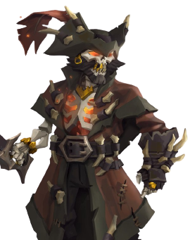

Pendragon
Pendragon é um personagem nobre e benevolente em Sea of Thieves. Ele é conhecido por sua bondade e sabedoria, buscando ajudar e guiar os jovens piratas pelo caminho correto.
Pendragon tem uma presença respeitável e inspiradora, representando a justiça e a luz nos mares. Sua história está ligada à luta contra Flameheart, e ele busca libertar outros piratas amaldiçoados. Sua liderança é marcada pela compaixão e pela busca de um mundo equilibrado e correto.

Flameheart
Flameheart é um poderoso antagonista de Sea of Thieves, conhecido por sua personalidade ardente e determinação em espalhar o medo e a destruição. Com uma voz ameaçadora e habilidades estratégicas, ele busca o poder supremo, manipulando e enganando outros piratas em seu caminho. Sua presença é acompanhada por chamas, simbolizando sua conexão com o fogo.